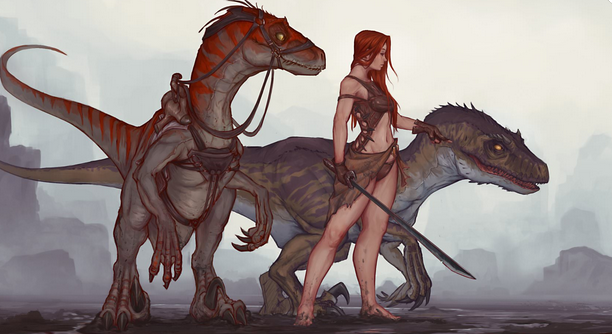

Force

Résistance

Dextérité

Magie (variable en fonction des attributs)

Ingénierie

Environnement : Archipel - île de la Couleuvre Soufflante - Friyka
Durée de vie moyenne : 450 ans
Taille : M
Système politique : Peuple dirigé par une famille royale sans tête dominante précise
Statut politique : Membres de la ligne de Vésir
Relations hostiles : -
Alliés : Ligue de Vésir
Croyance : Myzias
Force
Résistance
Dextérité
Magie (variable en fonction des attributs)
Ingénierie
Capacités innées : Pétrification d’une partie du corps pour encaisser plus facilement les dommages - Faculté à réduire la vitesse de déplacement des adversaires
Facilités magiques : Effets de contrôle (étourdissement, gel etc) et éléments
Impossibilités : Magie trop poussée en occultisme ou blanche
Les méduses naquirent dans les temps ancestraux sous la race des mystiques. Ces derniers étaient constitués de nos sujets et des Nagas, qui finirent par divergences de terrains par se diviser, donnant naissance à de lourds conflits militaires. Finalement, le couronnement de Myriade, fille bâtarde des deux peuples, mettra un terme à la guerre et unifiera les deux peuples, ainsi que les Trolls et les Taurens sous la ligue de Vésir et le culte de Myzias.
Profil type : Dur - Exigeant - Vexant - Peu franc
Métier répandu : Chasseur de trésors
Alimentation : Omnivore mais préférence pour la viande - Chasse et cueillette
Montures : Dinosaures
Le lien entre les Méduses et les Nagas se fait aisément, si les Nagas arborent des écailles de poissons, les méduses quant-à elles sont dotées de la peau rigide des serpents. Leurs cheveux, parfois constitués justement de reptiles, servent d’amplificateurs à leurs facultés magiques naturellement faibles, les faisant se spécialiser dans les traits de magie élémentaire. Au-delà du style capillaire et des écailles disposées irrégulièrement le long de leur corps, les Méduses peuvent, comme les Nagas, moduler leurs jambes jusqu’aux hanches pour se faire devenir elles-mêmes des demi-serpents. À leur mort, leur corps entier se transforme en pierre, solide et immuable. L’ensemble du portrait de cette race fait d’elle l’une des plus redoutables de l’Yndrill.
Nombre d'OC de cette race sur Yndrill: -